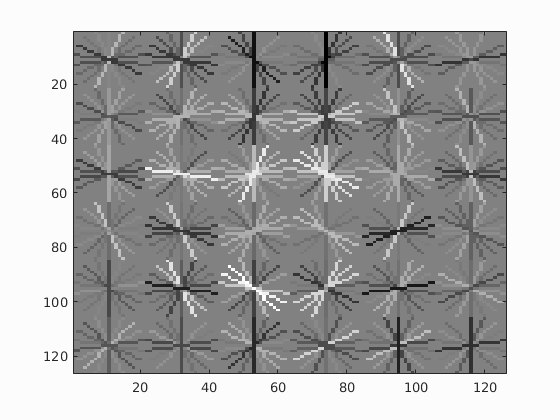

Project 5 / Face Detection with a Sliding Window

Example of a right floating element.
Introduction
The main objective of this project was to detect faces on a set of test images using a Support Vector Machine classifier trained using a set of patch of faces constituting the positive training data with label 1 and randomly sampled pactches containing no faces constituting the false training data with label -1. Used features corresponded to Histogram of Gradients obtained using the vl_hog function from the vl-feat package. A sliding window is used to classify each patch of tests images to determine if a face is present in the patch or not. Given that faces might have different scales, the image is resized a couple of time to account for that aspect of the problem.
Implementation of "get_positive_features" function
Implementation of this function was straightforward. Image files of faces are read from the directory where they are stored, and Histogram of Gradients are computed on each one of them. The obtained HOG is then reshaped into a vector of dimension 1 by 1116. All the feature vectors are stored in a matrix which is returned at the end. The code is presented below
function features_pos = get_positive_features(train_path_pos, feature_params)
image_files = dir( fullfile( train_path_pos, '*.jpg') );
num_images = length(image_files);
features_pos = zeros(num_images,(feature_params.template_size / feature_params.hog_cell_size)^2 * 31);
for indx=1:num_images
fileName = image_files(indx).name;
im = imread(fullfile(train_path_pos, fileName));
% if size(im,3) == 3
% im = rgb2gray(im);
% end
HOG = vl_hog(single(im), feature_params.hog_cell_size);
features_pos(indx,:) = reshape(HOG, 1, []);
end
Implementation of "get_random_negative_features" function
Similarly to the implementation of get_positive_features, the implementation of this function was straightforward. Image files of random scenes containig no faces are read from the directory where they are stored, and patch of dimension of the template (36 by 36) are randomly sampled from the image before computing HOG on each template and reshaping the HOG into a vector of dimension 1 by 1116. 50 patches were sampled from each image. The code is presented below
function features_neg = get_random_negative_features(non_face_scn_path, feature_params, num_samples)
image_files = dir( fullfile( non_face_scn_path, '*.jpg' ));
num_images = length(image_files);
num_patches = 1;
features_neg = zeros(num_samples,(feature_params.template_size / feature_params.hog_cell_size)^2 * 31);
for indx=1:num_images
fileName = image_files(indx).name;
im = imread(fullfile( non_face_scn_path, fileName));
if size(im,3)==3
im = rgb2gray(im);
end
[m,n] = size(im);
for i=1:50
im_patch = im(randi(m-feature_params.template_size+1)+(0:feature_params.template_size-1), ...
randi(n-feature_params.template_size+1)+(0:feature_params.template_size-1));
HOG = vl_hog(single(im_patch), feature_params.hog_cell_size);
if num_patches < num_samples
features_neg(num_patches,:) = reshape(HOG, 1, []);
num_patches = num_patches + 1;
end
end
end
Training Support Vector Machine for Classification
Training the classifier was done in 5 lines of code. Labels were created; 1 corresponding to images of faces and -1 corresponding to randomly sampled negative patch which do no contain any faces. The set of weights w and the intercept parmameter b are learned using the function vl_svmtrain from the vl-feat package. The value of lambda was set to 0.00001 The code snippet is presented below
labels_pos = ones(size(features_pos,1),1);
labels_neg = -ones(size(features_neg,1),1);
training_labels = [labels_pos;labels_neg];
training_features = [features_pos;features_neg];
[w, b] = vl_svmtrain(training_features', training_labels', 0.00001);
Implementation of "run_detector" function
This function computes the Histogram of Gradients on test images at different scales (i.e. scale = 0.7^n for n=0,1,...10) and a sliding window of size 6 which takes 1 step after every iteration. The threshold of the confidence was set at -0.8. The code is shown below
function [bboxes, confidences, image_ids] = ....
run_detector(test_scn_path, w, b, feature_params)
test_scenes = dir( fullfile( test_scn_path, '*.jpg' ));
%initialize these as empty and incrementally expand them.
bboxes = [];
confidences = [];
image_ids = {};
num_detect = 1;
num_scales = 7;
scale = 0.9;
window_size = feature_params.template_size/feature_params.hog_cell_size;
for i = 1:length(test_scenes)
bboxes_im = [];
confidences_im = [];
image_ids_im= {};
count = 1;
fprintf('Detecting faces in %s\n', test_scenes(i).name)
img = imread( fullfile( test_scn_path, test_scenes(i).name ));
img = single(img)/255;
if(size(img,3) > 1)
img = rgb2gray(img);
end
for scale_pow=0:num_scales
HOG = vl_hog(imresize(img,scale^scale_pow), feature_params.hog_cell_size);
[m,n,~] = size(HOG);
x_step = 1;
y_step = 1;
m = m-rem(m,window_size);
n = n-rem(n,window_size);
for y_start=1:y_step:(m-window_size+1)
for x_start=1:x_step:(n-window_size+1)
patch = HOG(y_start:y_start+(window_size-1),x_start:x_start+(window_size-1),:);
patch = reshape(patch,1,[]);
conf = patch*w + b;
if conf > -1.0
x_min = floor((x_start*feature_params.hog_cell_size - feature_params.hog_cell_size)/(scale^scale_pow));
y_min = floor((y_start*feature_params.hog_cell_size - feature_params.hog_cell_size)/(scale^scale_pow));
x_max = x_min + floor(feature_params.template_size/(scale^scale_pow));
y_max = y_min + floor(feature_params.template_size/(scale^scale_pow));
bboxes_curr= [x_min, y_min, x_max, y_max];
bboxes_im = [bboxes_im; bboxes_curr];
confidences_im = [confidences_im; conf];
image_ids_im = [image_ids_im;{test_scenes(i).name}];
num_detect = num_detect + 1;
count = count + 1;
end
end
end
end
if size(bboxes_im,1) ~= 0
[is_max] = non_max_supr_bbox(bboxes_im, confidences_im, size(img));
confidences = [confidences;confidences_im(is_max,:)];
bboxes = [bboxes; bboxes_im(is_max,:)];
image_ids = [image_ids;image_ids_im(is_max,:)];
end
end
% whos('image_ids')
% image_ids{1}
end
|  |
An average precision of 0.85 was achieved. The result are shown on images and plots below
Shown below are a couple of resulting face detections

|